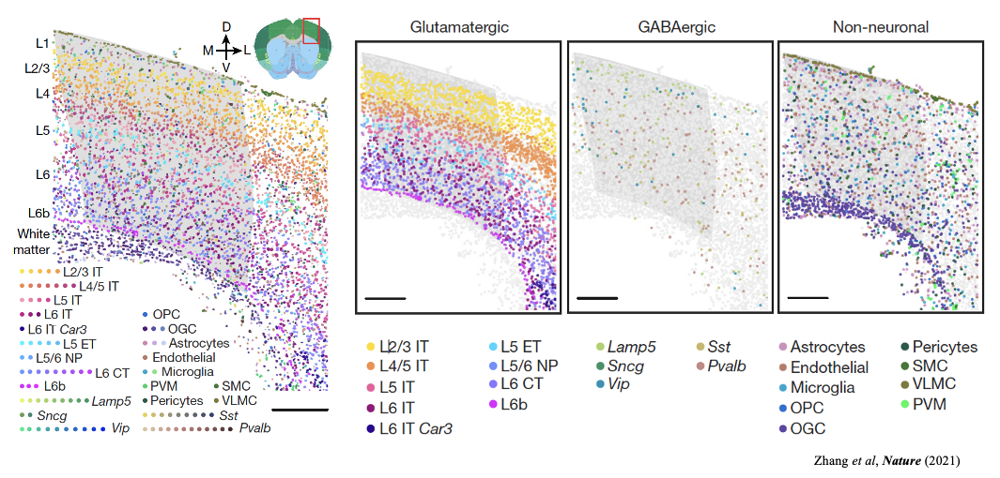
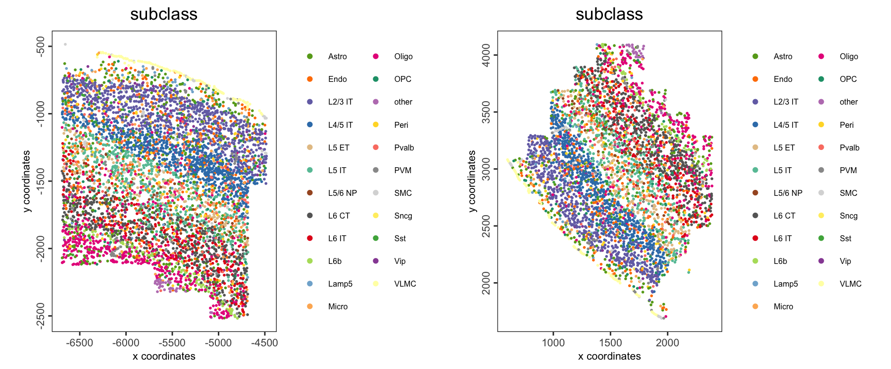
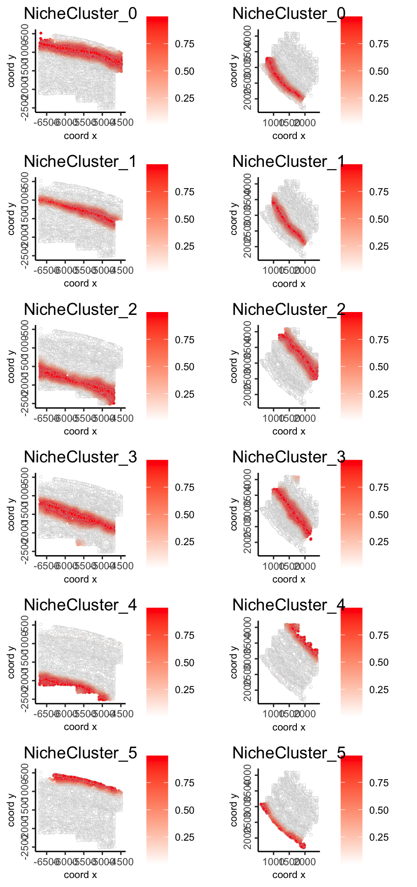
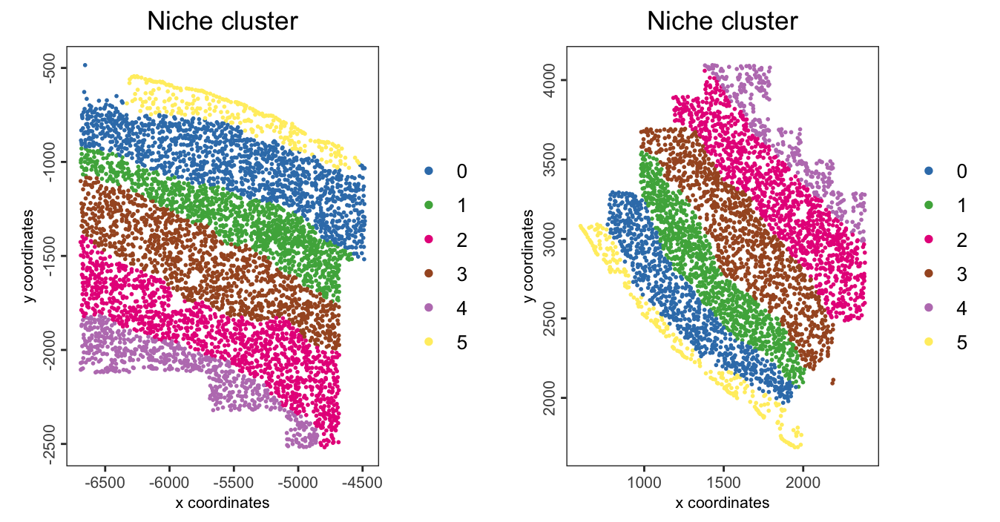
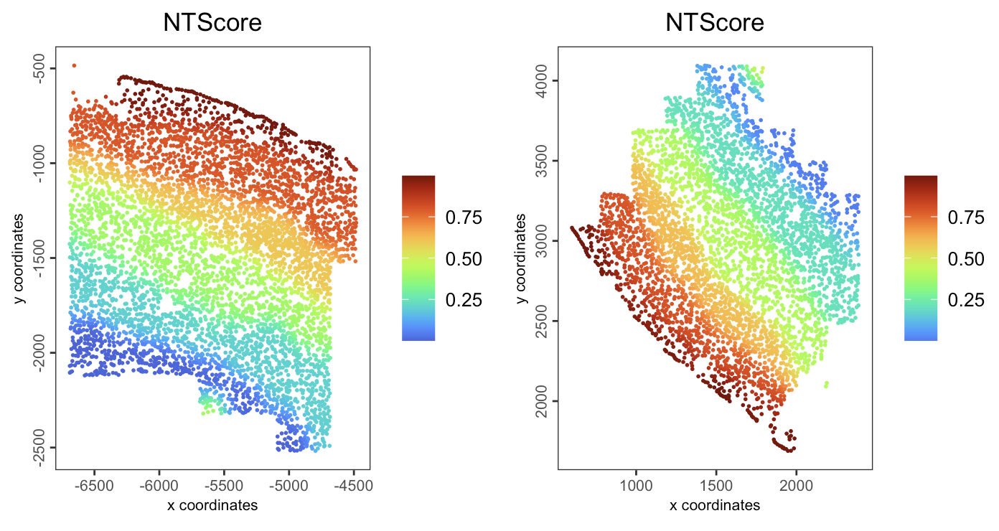
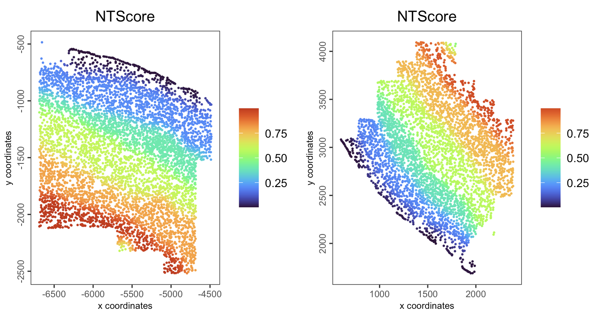

16 Interoperability with isolated tools
Wen Wang
August 7th 2024
16.1 Spatial niche trajectory analysis (ONTraC)
16.1.1 Introduction to ONTraC
ONTraC (Ordered Niche Trajectory Construction) is a niche-centered, machine learning method for constructing spatially continuous trajectories. ONTraC differs from existing tools in that it treats a niche, rather than an individual cell, as the basic unit for spatial trajectory analysis. In this context, we define niche as a multicellular, spatially localized region where different cell types may coexist and interact with each other. ONTraC seamlessly integrates cell-type composition and spatial information by using the graph neural network modeling framework. Its output, which is called the niche trajectory, can be viewed as a one dimensional representation of the tissue microenvironment continuum. By disentangling cell-level and niche-level properties, niche trajectory analysis provides a coherent framework to study coordinated responses from all the cells in association with continuous tissue microenvironment variations.

16.1.2 Introduction to MERFISH
MERFISH is a massively multiplexed single-molecule imaging technology for spatially resolved transcriptomics capable of simultaneously measuring the copy number and spatial distribution of hundreds to tens of thousands of RNA species in individual cells. For further information, please visit the official website.

16.1.4 Dataset
This is a MERFISH mouse motor cortex dataset comprising 61 tissue sections and containing approximately 280,000 cells characterised by a 258-gene panel. The study identified 3 classes of cells, glutamatergic, GABAergic and non-neuronal cell groups, and further clustered into 23 annotated plus 1 other subclass-level cell types.

Pseudotime based methods could generate one dimensional coordinates for specific lineages but lack the ability to generate trajectories for whole samples. By moving our focus from the cell to the niche (local microenvironment), ONTraC could generate niche trajectories for whole samples and map the NT score to each cell.
16.1.4.1 Dataset download
The MERFISH mouse motor cortex data to run this tutorial can be found here
You need to download the processed expression, metadata, and cell segmentation information by running these commands:
Note 1: there are 61 slices here, we run on two of them to save the time. Note 2: due to the instability of network, download processing may be interrupt.
We recommend to download these data in advance or download the processing giotto obj from Zenodo.
download.file(url = "https://download.brainimagelibrary.org/cf/1c/cf1c1a431ef8d021/processed_data/counts.h5ad",
destfile = file.path(data_path,"counts.h5ad"))
download.file(url = "https://download.brainimagelibrary.org/cf/1c/cf1c1a431ef8d021/processed_data/cell_labels.csv",
destfile = file.path(data_path,"cell_labels.csv"))
download.file(url = "https://download.brainimagelibrary.org/cf/1c/cf1c1a431ef8d021/processed_data/segmented_cells_mouse2sample1.csv",
destfile = file.path(data_path,"segmented_cells_mouse2sample1.csv"))
download.file(url = "https://download.brainimagelibrary.org/cf/1c/cf1c1a431ef8d021/processed_data/segmented_cells_mouse2sample6.csv",
destfile = file.path(data_path,"segmented_cells_mouse2sample6.csv"))16.1.5 Create the Giotto object
library(Giotto)
library(reticulate)
## Set instructions
python_path <- NULL
instructions <- createGiottoInstructions(
save_dir = results_folder,
save_plot = TRUE,
show_plot = FALSE,
return_plot = FALSE,
python_path = python_path
)
## create Giotto object from expression counts. This file contains 61 slices here.
giotto_all_slices_obj <- anndataToGiotto("data/03_session5/counts.h5ad")
## load meta_data
meta_df <- read.csv(file.path(data_path, "cell_labels.csv"),
colClasses = "character") # as the cell IDs are 30 digit numbers, set the type as character to avoid the limitation of R in handling larger integers
colnames(meta_df)[[1]] <- "cell_ID"
### we use two slices here to speed up
slice1_cells <- meta_df[meta_df$slice_id == "mouse2_slice229",]$cell_ID
slice2_cells <- meta_df[meta_df$slice_id == "mouse2_slice300",]$cell_ID
## subset giotto obj by cell ID
giotto_slice1_obj <- subsetGiotto(gobject = giotto_all_slices_obj,
cell_ids = slice1_cells)
giotto_slice2_obj <- subsetGiotto(gobject = giotto_all_slices_obj,
cell_ids = slice2_cells)
## add cell metadata
giotto_slice1_obj <- addCellMetadata(gobject = giotto_slice1_obj,
new_metadata = meta_df,
by_column = TRUE)
giotto_slice2_obj <- addCellMetadata(gobject = giotto_slice2_obj,
new_metadata = meta_df,
by_column = TRUE)
## cell segmentation. Calculate center (median of vertices) of each cell.
segments_1_df <- read.csv(file.path(data_path, "segmented_cells_mouse2sample1.csv"),
row.names=1, colClasses = "character") # as the cell IDs are 30 digit numbers, set the type as character to avoid the limitation of R in handling larger integers
segments_2_df <- read.csv(file.path(data_path, "segmented_cells_mouse2sample6.csv"),
row.names=1, colClasses = "character") # as the cell IDs are 30 digit numbers, set the type as character to avoid the limitation of R in handling larger integers
segments_df <- rbind(segments_1_df, segments_2_df)
loc.use <- segments_df[selected_cells,]
loc.x <- grep("boundaryX_",colnames(loc.use),value = T)
loc.y <- grep("boundaryY_",colnames(loc.use),value = T)
centr.x <- apply(loc.use[,loc.x],1,function(x){
temp <- lapply(x,function(y){
as.numeric(unlist(strsplit(y,", ")))
})
return (median(unname(unlist(temp))))
})
centr.y <- apply(loc.use[,loc.y],1,function(x){
temp <- lapply(x,function(y){
as.numeric(unlist(strsplit(y,", ")))
})
return (median(unname(unlist(temp))))
})
## create spatial locations object
spatial_locs_df <- data.frame(cell_ID = selected_cells,
sdimx = centr.x,
sdimy = centr.y)
spatial_locs_slice1_df <- spatial_locs_df[slice1_cells,]
spatial_locs_slice2_df <- spatial_locs_df[slice2_cells,]
spat_locs_slice1_obj <- readSpatLocsData(data_list = spatial_locs_slice1_df)
spat_locs_slice2_obj <- readSpatLocsData(data_list = spatial_locs_slice2_df)
## add spatial location info
giotto_slice1_obj <- setSpatialLocations(gobject = giotto_slice1_obj,
x = spat_locs_slice1_obj)
giotto_slice2_obj <- setSpatialLocations(gobject = giotto_slice2_obj,
x = spat_locs_slice2_obj)
## merge two giotto objects together
giotto_obj <- joinGiottoObjects(gobject_list = list(giotto_slice1_obj,
giotto_slice2_obj),
gobject_names = c("mouse2_slice229",
"mouse2_slice300"), # name for each samples
join_method = "z_stack")
## save giotto obj
saveGiotto(giotto_obj,
foldername = file.path(results_folder, "giotto_merfish_subset"))If you facing network issue when downloading the raw dataset. Please download the processing giotto obj from Zenodo, unzip and move it to results folder
16.1.5.1 Spatial distribution of cell type
spatPlot2D(giotto_obj,
group_by = "slice_id",
cell_color = "subclass",
point_size = 1,
point_border_stroke = NA,
legend_text = 6)
# We skip the processing process here to save time and use the given cell type
# annotation directly
ONTraC_input <- getONTraCv1Input(gobject = giotto_obj,
cell_type = "subclass",
output_path = data_path,
spat_unit = "cell",
feat_type = "rna",
verbose = TRUE)# Cell_ID Sample x y Cell_Type
# <chr> <chr> <dbl> <dbl> <chr>
# mouse2_slice229-100101435705986292663283283043431511315 mouse2_slice229 -4828.728 -2203.4502 L6 CT
# mouse2_slice229-100104370212612969023746137269354247741 mouse2_slice229 -5405.400 -995.6467 OPC
# mouse2_slice229-100128078183217482733448056590230529739 mouse2_slice229 -5731.403 -1071.1735 L2/3 IT
# mouse2_slice229-100209662400867003194056898065587980841 mouse2_slice229 -5468.113 -1286.2465 Oligo
# mouse2_slice229-100218038012295593766653119076639444055 mouse2_slice229 -6399.986 -959.7440 L2/3 IT
# mouse2_slice229-100252992997994275968450436343196667192 mouse2_slice229 -6637.847 -1659.6237 Astro16.1.6 Perform spatial niche trajectory analysis using ONTraC
16.1.6.1 ONTraC Installation
You could run ONTraC on your own laptop or on an HPC with an NVIDIA GPU node. It will run for less than 10 minutes on this example dataset. For larger datasets, running on an NVIDIA GPU is recommended, otherwise it will take a long time.
16.1.6.2 Running ONTraC
This step will take several minutes to run.
source ~/.bash_profile
conda activate ONTraC
ONTraC --meta-input data/03_session5/ONTraC_dataset_input.csv --preprocessing-dir data/03_session5/preprocessing_dir --GNN-dir data/03_session5/GNN_dir --NTScore-dir data/03_session5/NTScore_dir --device cpu --epochs 1000 -s 42 --patience 100 --min-delta 0.001 --min-epochs 50 --lr 0.03 --hidden-feats 4 -k 6 --modularity-loss-weight 1 --regularization-loss-weight 0.1 --purity-loss-weight 100 --beta 0.3 --equal-space 2>&1 | tee data/03_session5/merfish_subset.log16.1.7 Visualization
16.1.7.1 Load ONTraC results
The NTScore and binarized niche cluster info were stored in cell metadata
# cell_ID sample_id slice_id class_label subclass label list_ID NicheCluster NTScore
# <char> <char> <char> <char> <char> <char> <char> <int> <num>
# 1: mouse2_slice229-100101435705986292663283283043431511315 mouse2_sample6 mouse2_slice229 Glutamatergic L6 CT L6_CT_5 mouse2_slice229 2 0.7998957
# 2: mouse2_slice229-100104370212612969023746137269354247741 mouse2_sample6 mouse2_slice229 Other OPC OPC mouse2_slice229 0 0.2003027
# 3: mouse2_slice229-100128078183217482733448056590230529739 mouse2_sample6 mouse2_slice229 Glutamatergic L2/3 IT L23_IT_4 mouse2_slice229 0 0.2350597
# 4: mouse2_slice229-100209662400867003194056898065587980841 mouse2_sample6 mouse2_slice229 Other Oligo Oligo_1 mouse2_slice229 1 0.3990417
# 5: mouse2_slice229-100218038012295593766653119076639444055 mouse2_sample6 mouse2_slice229 Glutamatergic L2/3 IT L23_IT_4 mouse2_slice229 0 0.2910255
# 6: mouse2_slice229-100252992997994275968450436343196667192 mouse2_sample6 mouse2_slice229 Other Astro Astro_2 mouse2_slice229 2 0.8007477The probability matrix of each cell assigned to each niche cluster and connectivity between niche cluster were stored here.
16.1.7.2 Niche cluster probability distribution
spatFeatPlot2D(gobject = giotto_obj,
spat_unit = "cell",
feat_type = "niche cluster",
expression_values = "prob",
group_by = "list_ID",
feats = rownames(giotto_obj@expression$cell$`niche cluster`$prob),
point_border_col = "gray"
)
16.1.7.3 Binarized niche cluster for each cell
spatPlot2D(giotto_obj,
spat_unit = "cell",
group_by = "slice_id",
cell_color = "NicheCluster",
color_as_factor = TRUE,
point_size = 1,
point_border_stroke = NA)
16.1.7.5 NT (niche trajectory) score
spatPlot2D(gobject = giotto_obj,
spat_unit = "cell",
feat_type = "rna",
group_by = "slice_id",
cell_color = "NTScore",
color_as_factor = FALSE,
cell_color_gradient = "turbo",
point_size = 1,
point_border_stroke = NA
)
We could change the direction of NT scores here.
spatPlot2D(gobject = giotto_obj,
spat_unit = "cell",
feat_type = "rna",
group_by = "slice_id",
cell_color = "NTScore",
color_as_factor = FALSE,
cell_color_gradient = "turbo",
point_size = 1,
point_border_stroke = NA
)
plotCellTypeNTScore(gobject = giotto_obj,
cell_type = "subclass",
values = "NTScore",
spat_unit = "cell",
feat_type = "rna")
16.2 Session info
# R version 4.4.0 (2024-04-24)
# Platform: aarch64-apple-darwin20
# Running under: macOS Ventura 13.6.6
#
# Matrix products: default
# BLAS: /System/Library/Frameworks/Accelerate.framework/Versions/A/Frameworks/vecLib.framework/Versions/A/libBLAS.dylib
# LAPACK: /Library/Frameworks/R.framework/Versions/4.4-arm64/Resources/lib/libRlapack.dylib; LAPACK version 3.12.0
#
# locale:
# [1] en_US.UTF-8/en_US.UTF-8/en_US.UTF-8/C/en_US.UTF-8/en_US.UTF-8
#
# time zone: America/New_York
# tzcode source: internal
#
# attached base packages:
# [1] stats graphics grDevices utils datasets methods base
#
# other attached packages:
# [1] ggraph_2.2.1 ggplot2_3.5.1 reticulate_1.37.0 Giotto_4.1.0 GiottoClass_0.3.2
#
# loaded via a namespace (and not attached):
# [1] tidyselect_1.2.1 viridisLite_0.4.2 dplyr_1.1.4 farver_2.1.2 GiottoVisuals_0.2.4 viridis_0.6.5 fastmap_1.2.0 lazyeval_0.2.2 tweenr_2.0.3 digest_0.6.35 lifecycle_1.0.4
# [12] terra_1.7-78 magrittr_2.0.3 dbscan_1.1-12 compiler_4.4.0 rlang_1.1.4 tools_4.4.0 igraph_2.0.3 utf8_1.2.4 yaml_2.3.8 data.table_1.15.4 knitr_1.47
# [23] labeling_0.4.3 graphlayouts_1.1.1 htmlwidgets_1.6.4 sp_2.1-4 plyr_1.8.9 RColorBrewer_1.1-3 withr_3.0.0 purrr_1.0.2 grid_4.4.0 polyclip_1.10-6 fansi_1.0.6
# [34] colorspace_2.1-0 scales_1.3.0 gtools_3.9.5 MASS_7.3-60.2 cli_3.6.2 rmarkdown_2.27 generics_0.1.3 rstudioapi_0.16.0 httr_1.4.7 reshape2_1.4.4 cachem_1.1.0
# [45] ggforce_0.4.2 stringr_1.5.1 parallel_4.4.0 matrixStats_1.3.0 vctrs_0.6.5 Matrix_1.7-0 jsonlite_1.8.8 bookdown_0.40 ggrepel_0.9.5 scattermore_1.2 magick_2.8.3
# [56] GiottoUtils_0.1.10 plotly_4.10.4 tidyr_1.3.1 glue_1.7.0 codetools_0.2-20 cowplot_1.1.3 stringi_1.8.4 gtable_0.3.5 deldir_2.0-4 munsell_0.5.1 tibble_3.2.1
# [67] pillar_1.9.0 htmltools_0.5.8.1 R6_2.5.1 tidygraph_1.3.1 evaluate_0.24.0 lattice_0.22-6 png_0.1-8 backports_1.5.0 memoise_2.0.1 Rcpp_1.0.12 gridExtra_2.3
# [78] checkmate_2.3.1 colorRamp2_0.1.0 xfun_0.44 pkgconfig_2.0.3